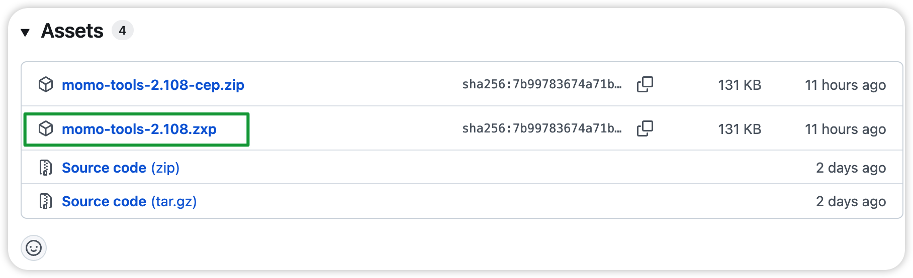
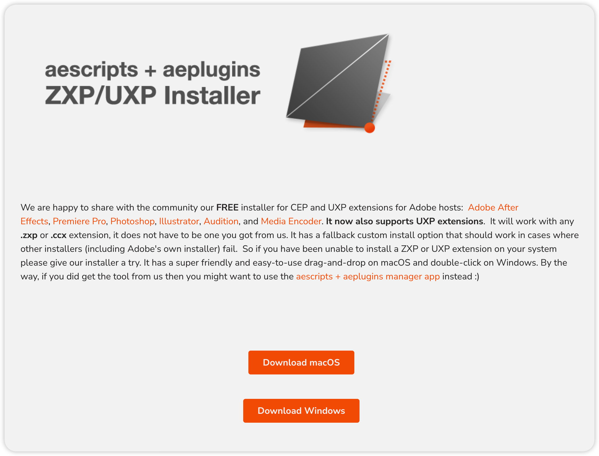
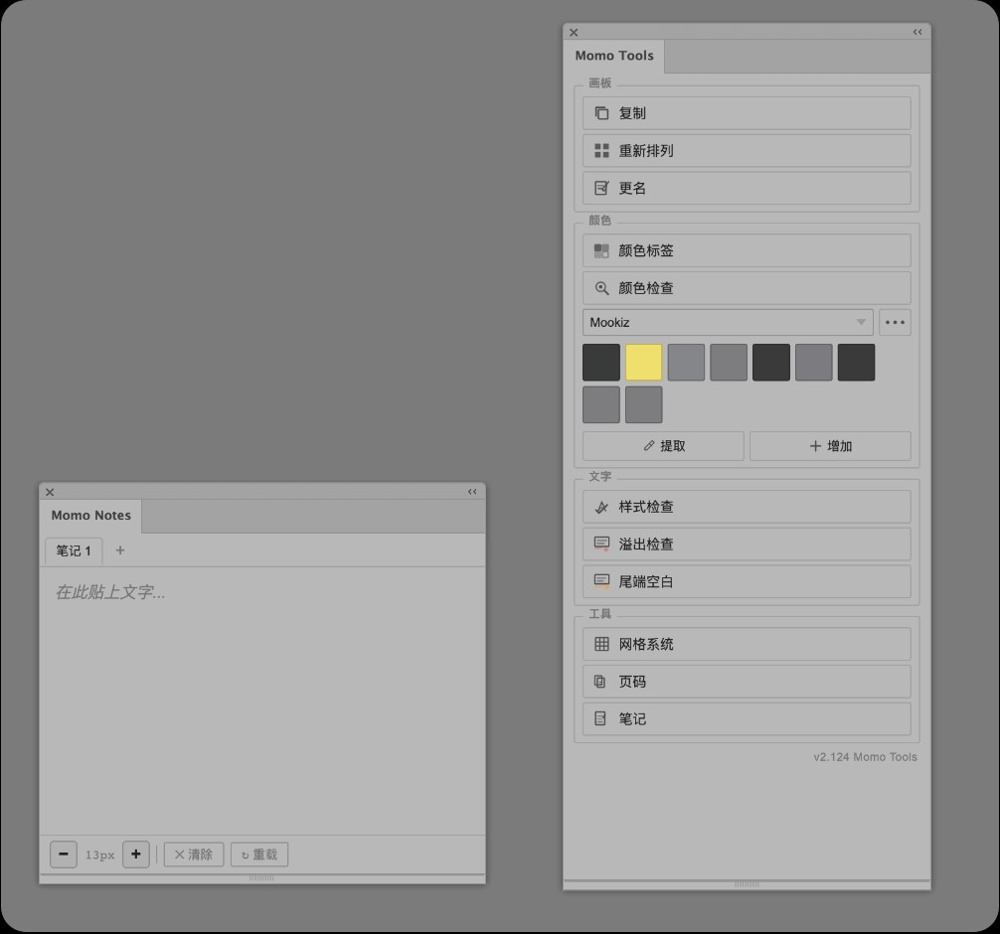

Momo Tools 使用指南
Adobe Illustrator 外挂面板 v2.108 — 画板、颜色、文字、排版工具集 · 2026-06-23
Momo Tools 是一套 Illustrator 小工具集，帮你在一个面板里完成那些 AI 原生功能做不到、或做起来很慢的事：批量复制画板（带着内容一起）、一键检查全文件的文字溢出、清点文档用色、管理品牌色库、生成排版网格、自动加页码。
没有弹窗、不用记快捷键。安装完成后见下方快速上手，再按功能分组了解每个按钮。
安装与启动
任选下面一种安装方式即可（不必两种都做）。安装完成后均需完全退出并重启 Illustrator。
安装方法
【方法一：ZXP 文件安装】
适合不熟悉复制文件夹路径的用户。macOS 与 Windows 步骤相同。
- 从 GitHub Releases 下载
.zxp文件

momo-tools-x.xx.zxp
- 打开 ZXP Installer，将
.zxp文件拖入窗口完成安装
- 完全退出并重启 Illustrator
- 菜单打开 Momo Tools（macOS：
窗口 → 扩展功能；Windows：Window → Extensions）
【方法二：手动安装（CEP 文件夹）】
从 GitHub Releases 下载 momo-tools-*-cep.zip 并解压，得到 com.tomideas.illustratortools 文件夹（名称须保持此样）。再按系统展开下方步骤操作。
此方法步骤较多，日常安装建议优先使用 方法一 ZXP。需要手动部署时再展开对应系统。
🍎 macOS 安装步骤
1. 创建扩展目录（首次安装必做）
macOS 通常没有现成的 CEP 文件夹，需自行创建：
mkdir -p ~/Library/Application\ Support/Adobe/CEP/extensions open ~/Library/Application\ Support/Adobe/CEP/extensions
目标路径（Finder 中「前往文件夹」可粘贴）：
~/Library/Application Support/Adobe/CEP/extensions/
完整示例（把 你的用户名 换成实际用户名）：
/Users/你的用户名/Library/Application Support/Adobe/CEP/extensions/
2. 放入扩展文件夹
将解压得到的 com.tomideas.illustratortools 拖入上一步打开的 extensions 文件夹。
最终应存在：
.../CEP/extensions/com.tomideas.illustratortools/
3. 启用未签名扩展（首次必做）
Momo Tools 为开发版 CEP 扩展，须开启 PlayerDebugMode。请先完全退出 Illustrator，再打开「终端」执行：
defaults write com.adobe.CSXS.11 PlayerDebugMode 1 defaults write com.adobe.CSXS.12 PlayerDebugMode 1
Illustrator 2024 及更新版本通常对应 CSXS.12；较旧版本用 CSXS.11。两条都执行可兼容不同版本。
4. 启动面板
- 完全退出并重新打开 Adobe Illustrator
- 菜单栏：窗口 → 扩展功能 → Momo Tools（部分版本为 窗口 → 扩展）
- 笔记面板：窗口 → 扩展功能 → Momo Notes，或主面板「笔记」按钮
面板底部显示版本号即表示加载成功。
5. 卸载（macOS）
删除以下文件夹后重启 Illustrator：
~/Library/Application Support/Adobe/CEP/extensions/com.tomideas.illustratortools
颜色库在 ~/Library/Application Support/MomoTools/，笔记在面板存储中，卸载扩展不会删除它们。
🪟 Windows 安装步骤
1. 创建扩展目录（首次安装必做）
Windows 通常没有现成的 CEP 文件夹，需自行创建。任选一种方式：
方式 A — 资源管理器
- 打开资源管理器，地址栏输入
%APPDATA%回车 - 若无
Adobe文件夹则新建 - 在
Adobe下新建CEP，再在CEP下新建extensions
方式 B — 命令提示符
mkdir "%APPDATA%\Adobe\CEP\extensions" explorer "%APPDATA%\Adobe\CEP\extensions"
目标路径：
%APPDATA%\Adobe\CEP\extensions\
完整示例：
C:\Users\你的用户名\AppData\Roaming\Adobe\CEP\extensions\
2. 放入扩展文件夹
将解压得到的 com.tomideas.illustratortools 文件夹复制到 extensions 内。
最终应存在：
...\Adobe\CEP\extensions\com.tomideas.illustratortools\
3. 启用未签名扩展（首次必做）
请先完全退出 Illustrator，打开「命令提示符」执行：
reg add HKCU\Software\Adobe\CSXS.11 /v PlayerDebugMode /t REG_STRING /d 1 /f reg add HKCU\Software\Adobe\CSXS.12 /v PlayerDebugMode /t REG_STRING /d 1 /f
Illustrator 2024 及更新版本通常对应 CSXS.12；较旧版本用 CSXS.11。两条都执行可兼容不同版本。
4. 启动面板
- 完全退出并重新打开 Adobe Illustrator
- 菜单栏：Window → Extensions → Momo Tools
- 笔记面板：Window → Extensions → Momo Notes，或主面板「笔记」按钮
面板底部显示版本号即表示加载成功。
5. 卸载（Windows）
删除以下文件夹后重启 Illustrator：
%APPDATA%\Adobe\CEP\extensions\com.tomideas.illustratortools
颜色库在 %APPDATA%\MomoTools\，笔记在面板存储中，卸载扩展不会删除它们。
快速上手
从菜单打开 Momo Tools 主面板即可使用。记笔记可点「笔记」按钮，或单独打开 Momo Notes。

主面板自上而下四组按钮，点即执行，结果在 Illustrator 窗口底部短暂提示。主题跟随 AI 深浅色，无需设置。
| 分组 | 按钮 | 详情 |
|---|---|---|
| 画板 | 复制 · 重新排列 · 更名 | 画板工具 |
| 颜色 | 颜色标签 · 颜色检查 · 颜色库 | 颜色工具 |
| 文字 | 样式检查 · 溢出检查 · 尾端空白 | 文字工具 |
| 工具 | 网格系统 · 批量页码 · 笔记 | 工具集 · 笔记面板 |
未选中画板时，画板类按钮会自动置灰。
画板工具
复制画板
复制选中的画板及其所有内容。这是 Momo Tools 与 AI 原生「复制画板」的关键区别——后者不携带内容。
操作步骤
- 在 AI 中选中画板（Shift 多选或用画板面板）
- 点击「复制画板」按钮
- 设置参数后点「确定」
参数说明
| 重命名复制的画板 | 勾选后启用查找/替换命名。例：查 FR_ 替 EN_ → FR_01 变成 EN_01 |
| 左右/上下间距 | 复制出的画板与原始画板的净距（pt）。默认自动检测 |
| 整体位移 X/Y | 对整个复制结果做额外偏移。负值向左/上移动 |
无选中画板时按钮自动置灰，无需记忆。
重新排列
将全部画板按网格重新排列。不会修改画板内部内容位置。
操作步骤
- 在对话框列表中勾选要排列的画板（或输入范围如
1-10） - 设置每行个数与左右 / 上下间距
- 选择放置位置后点「确定」
参数说明
| 每行个数 | 逗号分隔，如 3,3,2 = 第一行 3 个、第二行 3 个、第三行 2 个。也可填单个数字表示每行固定数量 |
| 左右/上下间距 | 画板之间的净距，单位跟随当前文档 |
| 放置位置 | 选区左上 / 某画板正下方（可设偏移量） |
画板更名
4 种命名模式，互斥单选。适合批量改名或单个改名场景。
操作步骤
- 点击「画板更名」按钮
- 在列表中多选画板，或输入范围（如
1-5, 8） - 选择命名模式（模板 / 替换 / 逐行 / 后缀），填写参数后点「确定」
参数说明
| 模板 | 用 {n} 表示序号、{name} 表示原名。例：页_{n} → 页_01, 页_02… 可设起始值和步长 |
| 替换 | 查找原名中的文字 → 替换为新文字。支持正则表达式 |
| 逐行 | 在文本框中逐行输入新名称，一行对应一个画板。空行保留原名 |
| 后缀 | 在原名末尾统一追加固定文字。例：后缀 _v2 → FR_01_v2 |
列表支持多选（Ctrl / Shift），可仅对选中画板改名。列表上方的输入框支持范围语法，如 1-5, 8。
颜色工具
颜色标签生成
从选中物件提取填色，自动生成带色值说明的色块标签。支持多选、同色去重，常用于包装稿颜色标注或给印刷厂的色值指示图。
操作步骤
- 在 AI 中选中一个或多个物件（群组会递归提取内部填色）
- 点击「颜色标签」按钮
- 确认检测到的颜色列表，设置尺寸与位置后点「生成」
参数说明
| 色块尺寸 | 宽 / 高（pt），默认 20×20 |
| 字体大小 | 色值文字字号（pt） |
| 文字颜色 | 黑色 K100 / 白色 K0 |
| 排列方向 | 横排 → 或纵排 ↓（文字在色块上方或右侧） |
| 色块位置 | 画板右 / 下 / 左 / 外侧，或各物件右侧 |
| 间距 | 色块之间及距画板的净距（pt） |
标签写入图层「颜色标签」；CMYK 文件显示 CMYK 值，RGB / 专色 / 灰色也会按类型标注。再次生成会接续排在同侧已有标签之后。
颜色检查
清点指定画板内的用色：给每个对象标彩色编号，可选红框标出出现次数过少的稀有色。勾选「生成说明」会在首画板上方输出颜色汇总图例。
操作步骤
- 点击「颜色检查」按钮
- 设置画板范围与检查类型（文字 / 形状 / 描边）
- 确认输出选项后点「检查」
参数说明
| 画板范围 | all 全部；1-10；1,3,5 指定画板 |
| 检查类型 | 文字填色、形状填色、描边色，至少勾选一种 |
| 只检查可见对象 | 跳过隐藏图层 |
| 红框标出 ≤ N 次 | 默认 N=1，标出稀有色；关闭则只标编号 |
| 生成说明 | 首画板上方输出图例，编号颜色与画板标注一致 |
| 删除旧标注图层 | 清除上次的「颜色编号」「单次颜色标注」「颜色说明」 |
填色稀有色为红框，描边稀有色为橙框。只标记不改色；渐变、图案填色不统计。
颜色库
在面板内管理品牌标准色，跨文件、重启 Illustrator 后仍可用。点击色块即可填到当前选中物件（群组内物件也会填）。
操作步骤
- 点分组旁的 + 新建分组（如「包装色」「Meeting Pro」）
- 录入颜色：双击空白处手动输入，或选中文档物件后点「提取」
- 在 AI 中选中要填色的物件，点击色块应用
面板功能
| 编辑 / 删除 | 悬停色块 → ✎ 进入编辑器；删除在编辑器内红色按钮 |
| 拖拽排序 | 拖拽色块调整顺序 |
| 分组管理 | 点击分组名可改名；「•••」可按名称升序 / 降序排列分组 |
| CMYK / HEX | 以 CMYK 为准，两边互算同步。只改 HEX 未同步 CMYK 可能导致重启后颜色变白 |
备份与导入
| 导出库 | 「•••」→ 导出全部 JSON，含所有分组 |
| 导出当前分组 | 「•••」→ 仅导出当前分组，便于分享给团队 |
| 导入库 | 「•••」→ 覆盖整个颜色库 |
| 导入到当前分组 | 「•••」→ 仅追加到当前分组 |
数据保存在 ~/Library/Application Support/MomoTools/color_library.json（macOS）或 %APPDATA%\MomoTools\（Windows）；文件写入失败时会暂存面板 localStorage。建议定期导出 JSON 备份。
文字工具
三个文字工具建议按顺序使用：样式检查 → 溢出检查 → 尾端空白检查。
文字样式检查 v8.2.0
扫描文字框的字体、字号、行距一致性，标注异常。适合在排版完成后做风格一致性把关。
操作步骤
- 点击「样式检查」按钮
- 选择检查模式或库存模式，勾选要检查的维度（字体 / 字号 / 行距）
- 选定画板范围，设置字号容差后运行
- 检查模式：异常文本框以橙框标出；可勾选「生成说明」在画板外输出图例
两种模式
| 检查模式 | 找出字体/字号/行距与「主流值」不一致的文本框 → 橙框标记 |
| 库存模式 | 列出每个画板使用的所有字体/字号/行距组合（不标记），便于了解整份文件的文字使用情况 |
参数说明
| 检查画板 | 列表多选（Shift/Ctrl）或输入范围（1-5, 8） |
| 字号容差 | 容忍 ±x pt 的字号偏差（如设为 0.5pt，则 11.8pt 和 12pt 视为一致） |
| 检查维度 | 字体 / 字号 / 行距，可独立开关 |
文字溢出检查 v5.9.3
检测区域文字（Area Text）是否有内容超出文本框——即 AI 右下角的红色「＋」号。这是印前最常见的排版事故。
操作步骤
- 在对话框中选择要检查的画板（勾选列表或输入
1-5, 8） - 点击「溢出检查」运行
- 有溢出的文本框会被红框标记，按标记位置逐一修正
检测规则
| M4a 字符溢出 | 文本内容的字符数超过了总行数所能容纳的量（垂直溢出）。适用于多行区域文字。 |
| M8 水平溢出 | 将文本框转为点文字后内容变短了（水平溢出）。适用于单行/窄框文字。 |
| M12 段高溢出 | 段落的总高度（段落数 × 行距）超出了文本框高度（尾端空段溢出）。 |
仅检查区域文字（Area Text）。点文字不会溢出，不检查。尾端仅 Enter/空格导致的红色「+」目前不支持可靠检测。
尾端空白检查 v1.0.1
检测区域文字末尾的多余空格、制表符（Tab）、空段落。这些内容肉眼不可见，但在排版中会导致对齐异常或导出问题。
操作步骤
- 选择要检查的画板范围
- 点击「尾端空白」运行
- 有问题处以橙框标出，按标记位置清理
检查内容
| 末尾空格 | 段落末尾的空格字符 |
| 末尾 Tab | 段落末尾的制表符（\t） |
| 空段落 | 由连续回车产生的空白段落 |
问题已被标出来（橙框），你一眼就能看到。AI 在段落末尾会自动加一个看不见的段落标记，Momo Tools 不会把这个误判成「空段落」。
工具集
网格系统 v1.3.1
一键在画板上绘制设计网格参考线。原创作者：火山字型 canfei (hstype.com)。
操作步骤
- 点击「网格系统」按钮打开对话框
- 选择网格类型和参数
- 点「预览」查看效果（生成到
_网格预览图层） - 满意后点「应用」，或点「转为参考线」转为 AI 原生参考线
- 不满意点「取消」——预览会自动清除
网格类型
| 瑞士网格 | 经典平面设计网格。参数：列数、行数、间距。适合：书籍、画册、品牌物料排版 |
| 等分网格 | N 等分画板，支持间距和可选对角线。参数：分割数。适合：海报、封面、等分布局 |
| 黄金比例 | 基于斐波那契数列的黄金分割。参数：斐波那契项数、双轴/单轴、可选对角线。适合：摄影构图、视觉焦点安排 |
共用参数
| 作用范围 | 当前画板 / 选中的图形 / 全部画板 |
| 单位 | px / mm / pt，自动按文档单位转换 |
| 内边距 | 上/下/左/右 4 边独立，可一键全部同步 |
| 网格线颜色 | 6 种浅色圆形色块点选（浅蓝 / 浅绿 / 浅红 / 浅黄 / 浅灰 / 浅橙），选中显示蓝色高亮环 |
| 间距默认值 | 瑞士网格「列数」间距默认开启；「行数」间距与等分网格间距默认关闭（可手动勾选） |
| 保留上次网格 | 勾选后，再次生成网格不会清除上次的线，而是叠加在上面。方便同时使用多种网格（如瑞士网格+黄金比例） |
| 间距开关 | 列数、行数、等分网格各有一个独立的「间距」复选框。取消勾选则对应间距强制为 0（无间距排列）。三个复选框独立，样式一致 |
预览不会覆盖你已有的设计内容。如果已有同名图层，会先清空再重建。
批量页码
自动在多个画板上添加页码。适合多页画册、提案文件、产品型录。
操作步骤
- 点击「页码」按钮
- 选择要编号的画板
- 设置位置（9 宫格）、起始页码与格式后确认
参数说明
| 页码位置 | 9 个方位，对应数字键盘 1-9（底部左/中/右、中部左/中/右、顶部左/中/右） |
| 起始页码 | 从第几页开始编号（默认 1） |
| 格式 | 自定义前缀/后缀，如 第{n}页、Page {n} |
笔记面板 (Momo Notes) v1.7
独立 CEP 面板，在 Illustrator 内记录项目备注——不切换应用、不离开工作区。
操作步骤
- 主面板点「笔记」，或菜单
窗口 → 扩展功能 → Momo Notes - 点 + 新建标签页，点击标签名可重命名
- 在编辑区输入备注；底部可调整字号、清除或重载
功能一览
| 多标签 | 最多 10 个标签页，按项目或主题分离笔记 |
| 拖拽排序 | 拖拽标签页重新排列 |
| 行内重命名 | 点击标签名即可编辑，无弹窗 |
| Markdown 表格 | 在编辑器中输入表格文本（如 | A | B |），面板自动检测并渲染为可视化表格 |
| 字号控制 | 可在 9px - 32px 之间调整字体大小 |
笔记保存在面板浏览器存储中，重启 Illustrator 后仍在。重要内容建议复制备份。
使用技巧
印前标准检查流程
每次交付文件前，建议按以下顺序执行 4 项检查（约 1 分钟完成）：
- 文字溢出检查 — 红框处理。这是印前最常见也最严重的问题
- 尾端空白检查 — 橙框处理
- 文字样式检查 — 确认字体/字号/行距一致性
- 颜色检查 — 清点用色，标出出现次数过少的稀有色
颜色库使用建议
- 按产品线建立分组（而非按颜色类型分类）——因为你的日常流程是「做 Meeting Pro 的物料，我需要它的标准色」，而非「我要找个蓝色」
- 定期导出 JSON 备份（「•••」→ 导出库）
- 跨设备使用：导出 → 复制 JSON → 导入
- 编辑 CMYK 后确认 HEX 是否正确更新（反之亦然），两者经 ICC 转换后互算
画板技巧
- 先 复制画板 生成变体 → 再 画板更名 统一命名 → 最后 重新排列 整理布局
- 范围输入支持混合语法：
1-5, 8, 10-12 - 复制画板后检查查找/替换是否影响非目标文字（如画板名中的公共部分）
标注框颜色规则
| 红框 | 文字溢出（印前阻塞） |
| 橙框 | 尾端空白、文字样式不一致 |
| 红框 / 橙框（颜色检查） | 填色稀有色 / 描边稀有色（出现次数 ≤ 阈值） |
| 彩色数字 | 颜色检查编号，颜色与首画板图例一一对应 |
常见问题
菜单里找不到 Momo Tools
- 确认已执行 macOS PlayerDebugMode 或 Windows PlayerDebugMode，并完全重启 Illustrator
- 文件夹名称必须是
com.tomideas.illustratortools（见 macOS / Windows 安装路径） - 部分版本菜单为「扩展」而非「扩展功能」
面板打不开 / 白屏
试试这些方法：
- 重新打开面板：菜单栏 → 窗口 → 扩展功能 → Momo Tools
- 重启 Illustrator
- 检查是否装对位置：确认
com.tomideas.illustratortools文件夹在正确的扩展目录下（见上方安装步骤）
Momo Notes 白屏或标签页消失
- 先关闭 Momo Notes 面板（
窗口 → 扩展功能，取消勾选 Momo Notes） - 完全退出并重启 Illustrator
- 重启后从主面板「笔记」按钮或菜单重新打开
颜色库数据丢了 / 重启后变白
颜色库有两份存档（见颜色库 → 数据保存位置）：
- 文件：
~/Library/Application Support/MomoTools/color_library.json（macOS）或%APPDATA%\MomoTools\（Windows） - 备用：面板
localStorage
重启后颜色变白：通常是只改了 HEX、CMYK 未同步。请用 ✎ 编辑颜色，确认 CMYK 与 HEX 一致后保存。建议定期「•••」→ 导出库 备份 JSON。
颜色库保存失败？
- 若出现「已暂存本地，但写入文件失败」提示，数据仍在 localStorage，但重启 CEF 缓存可能被清——请尽快导出 JSON 备份
- 检查对
MomoTools目录是否有写权限
文字溢出检查结果不准确
三种情况：
- 漏掉了没标出来：极少数情况三规则没覆盖到（如极窄竖排文字）。可以反馈给开发者
- 标错了（没溢出却标了）：同样可以反馈案例
- 不会检查的对象：点文字（直接用文字工具点一下打出来的字）不会溢出，不用检查。路径上的文字检测有局限
面板颜色不跟随 AI 切换
面板启动时会读取 AI 的主题设置。如果切了主题面板没变：关掉面板重新打开，或重启 AI。